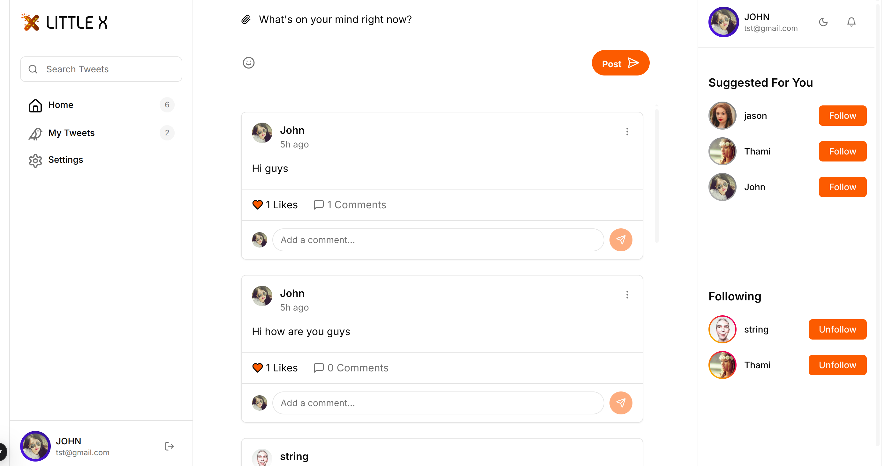

LittleX Tutorial for Beginners#
Welcome to the LittleX tutorial! This comprehensive guide is designed especially for beginners who want to learn Jaseci by building a simple Twitter-like application called LittleX. We'll break everything down into simple, digestible steps with clear explanations.
What is Jaseci?#
Jaseci is a powerful programming framework that makes building AI applications easier and more intuitive. Think of it as a comprehensive toolbox that enables you to:
- Store data in a connected graph structure (like a social network)
- Navigate through this graph to perform complex actions
- Add AI capabilities without complex coding requirements
What We'll Build: LittleX#
LittleX is a simplified yet functional version of Twitter that allows users to:
- Create accounts and personalized profiles
- Post short messages (tweets) with rich content
- Follow other users to build their network
- View a personalized feed of posts from people they follow
Complete Implementation#
Just 200 lines of code to build a full social media platform!

1 2 3 4 5 6 7 8 9 10 11 12 13 14 15 16 17 18 19 20 21 22 23 24 25 26 27 28 29 30 31 32 33 34 35 36 37 38 39 40 41 42 43 44 45 46 47 48 49 50 51 52 53 54 55 56 57 58 59 60 61 62 63 64 65 66 67 68 69 70 71 72 73 74 75 76 77 78 79 80 81 82 83 84 85 86 87 88 89 90 91 92 93 94 95 96 97 98 99 100 101 102 103 104 105 106 107 108 | |
1 2 3 4 5 6 7 8 9 10 11 12 13 14 15 16 17 18 19 20 21 22 23 24 25 26 27 28 29 30 31 32 33 34 35 36 37 38 39 40 41 42 43 44 45 46 47 48 49 50 51 52 53 54 55 56 57 58 59 60 61 62 63 64 65 66 67 68 69 70 71 72 73 74 75 76 77 78 79 80 81 82 83 84 85 86 87 88 89 90 91 92 93 94 95 96 97 98 99 100 101 102 103 104 105 106 107 108 109 110 111 112 | |
Getting Started#
Step 1: Install Jaseci#
First, let's install the required Jaseci libraries on your computer:
Step 2: Get the LittleX Code#
Clone the repository and navigate to the project directory:
Step 3: Install Dependencies#
Install backend and frontend dependencies:
# Install backend dependencies
pip install -r littleX_BE/requirements.txt
# Install frontend dependencies
cd littleX_FE
npm install
cd ..
Understanding Jaclang's Building Blocks#
Jaclang has three main components that form the foundation of our LittleX application:
Project File Structure#
Before diving into the components, let's understand how LittleX organizes its code using Jaseci's three-file pattern:
littleX.jac - The Blueprint#
Contains all declarations (what your application has):
# Defines what exists
node Profile {
has username: str;
can update with update_profile entry;
}
walker create_tweet(visit_profile) {
has content: str;
}
littleX.impl.jac - The Implementation#
Contains all implementations (how your application works):
# Defines how things work
impl Profile.update {
self.username = here.new_username;
report self;
}
impl create_tweet.tweet {
# Actual tweet creation logic
}
littleX.test.jac - The Tests#
Contains test cases (proving your application works):
# Verifies functionality
test create_tweet {
root spawn create_tweet(content = "Hello World");
tweet = [root --> (?Profile) --> (?Tweet)][0];
check tweet.content == "Hello World";
}
How to Run#
# Run the application (auto-loads impl)
jac run littleX.jac
# Run tests (auto-loads impl + tests)
jac test littleX.jac
# Start API server (auto-loads impl)
jac serve littleX.jac
Key Insight: Jaseci automatically links these files together - you define the structure once, implement separately, and test comprehensively!
1. Nodes (The "Things")#
Nodes are objects that store data and represent entities in your application. In LittleX, we have:
- User nodes → Store profile information
- Post nodes → Store tweet content and metadata
- Comment nodes → Store comments on tweets
Example: Simple User Node
This code creates a user object with a username property.
2. Edges (The "Connections")#
Edges connect nodes to represent relationships between entities. In LittleX, we have:
- Follow edges → User follows another user
- Post edges → User created a post
- Like edges → User liked a post
Example: Simple Follow Edge
This creates a "Follow" connection that links users together.
3. Walkers (The "Actions")#
Walkers are like functions that move through your graph and perform actions. They're what makes things happen in your application!
Example: Tweet Creation Walker
walker create_tweet(visit_profile) {
has content: str;
can tweet with Profile entry;
}
impl create_tweet.tweet {
embedding = sentence_transformer.encode(self.content).tolist();
tweet_node = here +>:Post:+> Tweet(content=self.content, embedding=embedding);
grant(tweet_node[0], level=ConnectPerm);
report tweet_node;
}
This walker creates a new post with the provided content and links it to the current user.
Building LittleX Step by Step#
Now let's see how these pieces come together to build our social media application:
1. User Profile Creation#
When a new user registers, the system:
- Creates a new user node
- Stores their username and profile data
walker visit_profile {
can visit_profile with `root entry;
}
impl visit_profile.visit_profile {
visit [-->(`?Profile)] else {
new_profile = here ++> Profile();
grant(new_profile[0], level=ConnectPerm);
visit new_profile;
}
}
2. Creating Posts#
After logging in, users can create and share posts:
walker create_tweet(visit_profile) {
has content: str;
can tweet with Profile entry;
}
impl create_tweet.tweet {
embedding = sentence_transformer.encode(self.content).tolist();
tweet_node = here +>:Post:+> Tweet(content=self.content, embedding=embedding);
grant(tweet_node[0], level=ConnectPerm);
report tweet_node;
}
3. Following Users#
Users can build their network by following each other:
walker follow_request {}
impl Profile.follow {
current_profile = [root-->(`?Profile)];
current_profile[0] +>:Follow():+> self;
report self;
}
4. Viewing Feed#
Display posts from people the user follows:
walker load_feed(visit_profile) {
has search_query: str = "";
has results: list = [];
can load with Profile entry;
}
impl load_feed.load {
visit [-->(`?Tweet)];
for user_node in [->:Follow:->(`?Profile)] {
visit [user_node-->(`?Tweet)];
}
report self.results;
}
Run LittleX Locally#
Let's get your application up and running:
Step 1: Start the Backend Server#
Success: Your backend server should now be running!
Step 2: Start the Frontend#
Open a new terminal and run:
Success: Your frontend development server is now active!
Step 3: Use the Application#
-
Open your browser to:
http://localhost:5173 -
Try these features:
- Creating a new account
- Posting some tweets
- Following other users
- Checking your personalized feed
Exploring the LittleX Code#
Let's examine some key components of the actual LittleX application:
The Profile Node#
node Profile {
has username: str = "";
can update with update_profile entry;
can get with get_profile entry;
can follow with follow_request entry;
can un_follow with un_follow_request entry;
}
This node represents a user profile with username and comprehensive social media abilities.
The Tweet Node#
node Tweet {
has content: str;
has embedding: list;
has created_at: str = datetime.datetime.now().strftime("%Y-%m-%d %H:%M:%S");
can update with update_tweet exit;
can delete with remove_tweet exit;
can like_tweet with like_tweet entry;
can remove_like with remove_like entry;
can comment with comment_tweet entry;
def get_info() -> TweetInfo;
can get with load_feed entry;
}
This node represents a tweet with rich metadata and full social interaction capabilities.
The Follow Ability#
impl Profile.follow {
current_profile = [root-->(`?Profile)];
current_profile[0] +>:Follow():+> self;
report self;
}
This implementation creates a follow relationship between user profiles.
Try These Exercises#
Ready to expand your skills? Try implementing these features:
- Add a like system for posts
- Create profile pages that display user-specific posts
- Implement user search functionality by username
- Add comment threading for deeper conversations
Conclusion#
Congratulations! You've successfully learned how to build a complete social media application with Jaseci. You now understand how:
- Nodes store and organize your application data
- Edges create meaningful relationships between entities
- Walkers perform complex actions and business logic
Jaseci's graph-based approach makes it perfect for social networks and other applications where connections between data are crucial for functionality.
Next Steps#
Ready to dive deeper? Explore these resources:
- Jaseci Documentation - Comprehensive guides
- Full LittleX Guide - Advanced features and enterprise patterns
Happy coding with Jaseci! 🚀